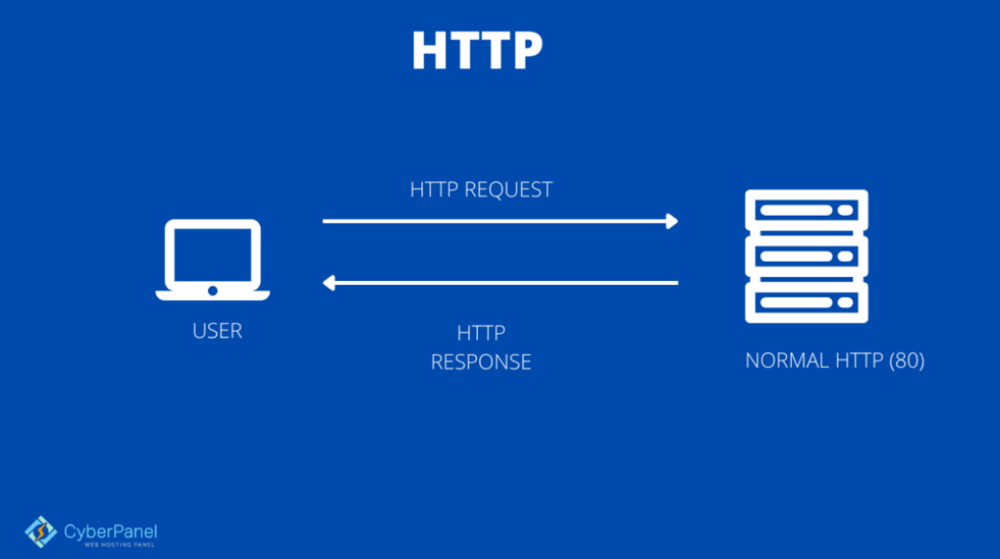

Hypertext Transfer Protocol (HTTP) is the application-layer protocol used for transmitting data on the World Wide Web. It defines the rules for how messages are formatted and exchanged between web browsers (clients) and web servers. Every time you visit a web page, your browser uses HTTP (or the secure version, HTTPS) to request and receive content.
HTTP is the foundation of data communication on the web, enabling seamless interaction between clients and servers.HTTP is a stateless, request-response protocol: the client sends a request with a method (GET, POST, PUT, DELETE, etc.), and the server returns a response with a status code and body. HTTPS (HTTP Secure) adds a layer of encryption using TLS/SSL, ensuring data transmitted between the browser and server is private and tamper-proof. Modern versions include HTTP/2 and HTTP/3, which offer improved speed through multiplexing and QUIC.
Key features of HTTP include: